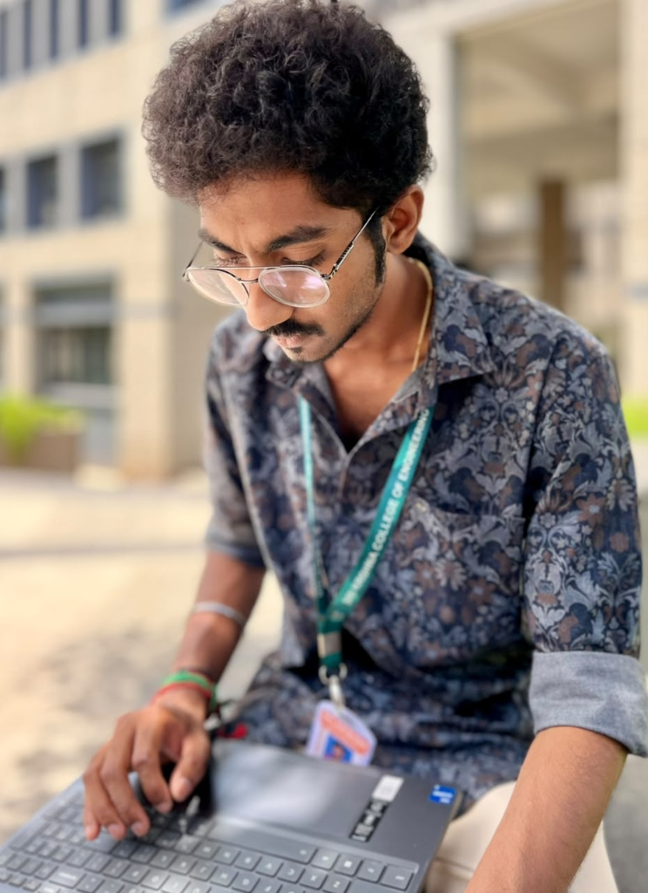

Developer & Creator Tooling
ADYK Inspire
Created to address real-world problems faced by developers and creators.
I’m an AI & ML student and founder focused on building practical software that solves real friction for developers, creators, and teams. Moderate coder, hands-on learner, and building with purpose.
How hands-on experimentation turned college curiosity into a purposeful venture.
I didn’t begin college with a startup plan. During my second year, curiosity about startups led me to create ATTENT-IN, a Student OS, and gave me the confidence to keep building.
I’m not an expert coder; I have moderate coding skills and I’m continuing to learn. Building hands-on helped me understand the challenges people face when creating products. That perspective helped inspire me to build ADYK Multi Venture Company.
ADYK Multi Venture Company was founded by Rejiesh Ashwanth and Dineshraj on September 5, 2026. Within a month, we built a platform called ADYK WIQN, and it is now live. I also worked with my team on ADYK Inspire and ADYK Cardex, products created to address real-world problems for developers and creators.
My first hackathon project with my team was ROAD SOS. Since then, we have participated in more than 10 hackathons together and reached Stage 2 in more than two. We didn’t win, but collaborating with my team taught me a lot and helped me grow through shared problem-solving.
Building intelligent software grounded in genuine user needs and verified performance.

Rooted in authentic system behavior and measurable performance, avoiding speculation.
Designed directly around friction experienced by developers, creators, and builders.
Clear, actionable understanding that enables founders and teams to make better decisions.
Three products conceived to address real-world problems for developers and creators.
Created to address real-world problems faced by developers and creators.
Created to address real-world problems faced by developers and creators.
A platform inspired by my need to check how my projects were working. WIQN is live now.
Formal foundations in technology, artificial intelligence, and machine learning.
A small, respectful note for the foundation, hard work, and values from home.
Owner of VSNM Printcare Solutions
Constant encouragement and foundation
A manual log of milestones and progress as we build. Newest items appear first.
Within a month of founding ADYK Multi Venture Company, we built and launched ADYK WIQN. Inspired by the need to verify how projects operate in practice, the platform provides direct project observation and utility for builders.
Participated in more than 10 hackathons with my team, starting with our first project ROAD SOS. Reached Stage 2 in more than two competitions. While we didn't win, shared problem-solving and rapid iteration taught us invaluable teamwork and resilience.
Worked with my team on ADYK Inspire and ADYK Cardex, two products conceived to address real-world problems faced by developers and creators.
On September 5, 2026, Rejiesh Ashwanth and Dineshraj founded ADYK Multi Venture Company. Our mission is to build intelligent products that help people, founders, and teams make better decisions using real data, real users, and real insights.
I didn’t begin college with a startup plan. In my second year studying AI & ML at Sri Krishna College of Engineering and Technology, curiosity about startups led me to create ATTENT-IN, a Student OS, which gave me the confidence to keep building hands-on.
Choose any topic below to open WhatsApp with your message already prepared. You can review, edit, and send whenever you’re ready.
Whether you’re curious about ADYK Multi Venture Company, interested in discussing WIQN, or have an idea or problem to explore, my inbox and WhatsApp are always open.
Connect across professional platforms, inspect open repositories, and follow along as we build products.